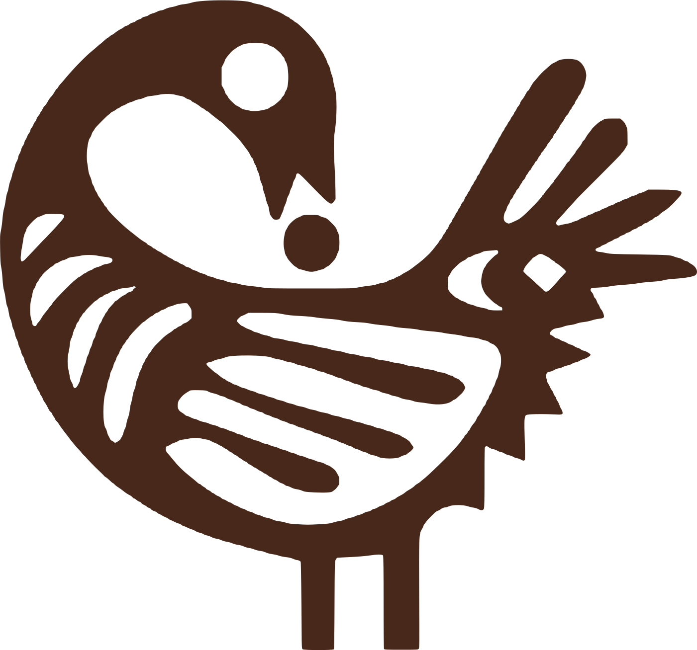

የባለቤትነት ሽግግር
የኢትዮጵያ ቦርዶች ከኬንያ የፕራይቬታይዜሽን ጉዞ ምን ሊማሩ ይችላሉ
የኬንያ የገበያ ምዝገባ ወቅቶች የቦርድ አዳራሾቿን ለውጠዋል፤ አንዳንዴም በአስቸጋሪ ሁኔታ። የኢትዮጵያ ቦርዶች አሁኑኑ ሊተገብሯቸው የሚችሉ አምስት ትምህርቶችን እንመለከታለን።
ሳንኮፋ የኢትዮጵያ ቦርዶችና ተቋማት ለአዲሱ የባለቤትነት ዘመን የሚያስፈልጋቸውን አስተዳደር እንዲገነቡ ያግዛል፤ በአፍሪካ ውስጥ ቀደም ብለው ከተገኙ ትምህርቶች በመነሳት።

የመንግሥት የልማት ድርጅቶች በኢትዮጵያ ሰነደ መዋዕለ ንዋዮች ገበያ በኩል ለአዳዲስ ባለቤቶች ክፍት እየሆኑ ነው። ቀደም ሲል ተጠሪነታቸው ለመንግሥት ብቻ የነበረ ቦርዶች አሁን በገበያ የተመዘገቡ ኩባንያዎችን መስፈርት ማሟላት አለባቸው፦ የጠነከረ ክትትል፣ የተሟላ መረጃ ይፋ ማድረግ እና ለባለአክሲዮኖች የላቀ ተጠያቂነት።
ኬንያ ድርጅቶቿን ወደ ግል ይዞታ ባዛወረችባቸውና በገበያ ባስመዘገበችባቸው ወቅቶች በዚህ ለውጥ ውስጥ አልፋለች። እኛም በቦርድ አዳራሾቿና በአስተዳደር ተቋሞቿ ውስጥ ነበርን። ሳንኮፋ የተቋቋመው እነዚያን ትምህርቶች ለማሻገር ነው፤ ኢትዮጵያ በፍጥነት እንድትራመድና ሌሎች የሠሯቸውን ስህተቶች እንዳትደግም።
ጠንካራ አስተዳደር ጥሩ ሕጎችን፣ ብቁ ቦርዶችን፣ የተካኑ ዳይሬክተሮችን እና መስፈርቶችን በዘላቂነት የሚያስጠብቁ ተቋማትን ይፈልጋል። ሳንኮፋ በእነዚህ ሁሉ ደረጃዎች ይሠራል።
ገበያ የሚያድግባቸውን መስፈርቶች ማስቀመጥ።
ኩባንያዎች እንዴት እንደሚተዳደሩ የሚወስኑ ማዕቀፎችን ለማዘጋጀት ከሰነደ መዋዕለ ንዋይ ገበያዎች፣ ከተቆጣጣሪ አካላት እና ከመንግሥት ሚኒስቴሮች ጋር እንሠራለን። ደንቦች እንዴት እንደሚቀረጹ፣ ምክክር እንደሚደረግባቸውና በተግባር እንደሚውሉ ቀጥተኛ ልምድ እናመጣለን፤ አዳዲስ መስፈርቶች ከኢትዮጵያ ነባራዊ ሁኔታ ጋር እንዲጣጣሙም እናግዛለን።
ለዘመናዊ የቦርድ አዳራሽ የሚያስፈልጉ ክህሎቶች።
ሥልጠናዎቻችን ዳይሬክተሮች በብቃት እንዲመሩ የሚያስችል ዕውቀትና በራስ መተማመን ይሰጣሉ። እያንዳንዱ ሥልጠና ተግባራዊ፣ በውይይት የሚመራ እና በኢትዮጵያና በኬንያ ተጨባጭ ጉዳዮች ላይ የተመሠረተ ነው። ሥልጠናዎቹ በአዲስ አበባ፣ ለአንድ ቦርድ በተለይ በድርጅቱ ውስጥ፣ ወይም ሥልጠናን ከኬንያ ድርጅቶች ጉብኝትና ከባህላዊ ተሞክሮ ጋር በሚያጣምሩ የናይሮቢ ፕሮግራሞች ይሰጣሉ።
ደረጃ በደረጃ የሚጠነክሩ ቦርዶች።
የቦርዶችን ውጤታማነት በዘላቂነት ለማሳደግ ከአንድ እስከ ሁለት ዓመት ከእያንዳንዱ ቦርድ ጋር በአጋርነት እንሠራለን። እያንዳንዱ ሥራ በሐቀኛ ግምገማ ይጀምራል፤ በስምምነት የተቀመጡ ምዕራፎች ያሉትን ግልጽ ዕቅድም ይከተላል።
ባለቤቶችን በለውጥ ውስጥ መምራት።
ከመንግሥት ባለቤትነት በገበያ ወደተመዘገበ ባለቤትነት መሸጋገር በኩባንያው፣ በቦርዱ እና በባለቤቶቹ መካከል ያለውን ግንኙነት ይለውጣል። ባለአክሲዮኖችና የባለቤትነት ቡድኖች መብትና ኃላፊነታቸውን እንዲረዱ እና ባለድርሻ አካሎቻቸውን እንዲያስማሙ እናግዛለን።
ከአንድ ፕሮጀክት ዕድሜ በላይ የሚዘልቁ ተቋማት።
ዘላቂ የአስተዳደር መስፈርቶች ሙያዊ ቤት ያስፈልጋቸዋል። አጋሮቻችን የኬንያን የዳይሬክተሮች ኢንስቲትዩት መርተዋል፤ በአሁኑ ወቅትም በመላ አፍሪካ የአስተዳደር ተቋማት እንዲቋቋሙ ያግዛሉ። ለኢትዮጵያ ብሔራዊ የዳይሬክተሮች የአባልነት ማኅበር እንዲመሠረት እንደግፋለን።
ሥልጠናዎቻችን ጊዜ ለሚያጥራቸው ዳይሬክተሮች የተዘጋጁ ናቸው። አጭር፣ ተግባራዊ እና ቦርዶች በሚገጥሟቸው እውነተኛ ውሳኔዎች ላይ የተመሠረቱ ናቸው። እያንዳንዱ ተሳታፊ በሚቀጥለው የቦርድ ስብሰባው ሊጠቀምባቸው የሚችሉ መሣሪያዎችን ይዞ ይሄዳል።
ከተለያዩ ድርጅቶች የመጡ ዳይሬክተሮች አብረው ይማራሉ፤ የየዘርፋቸውን ዕይታም ይለዋወጣሉ።
ለሙሉ ቦርድ ወይም ለኮሚቴ በተለይ የተዘጋጁ፣ በድርጅትዎ ቅጥር ግቢ የሚሰጡ።
በኬንያ ለጥቂት ቀናት የሚቆይ፦ ሥልጠና፣ ልምድ ባላቸው የኬንያ ድርጅቶች የልምድ ልውውጥ ጉብኝት እና የኬንያ ባህላዊ ተሞክሮ።
ለእያንዳንዱ ዳይሬክተር መሠረት የሆነ ሥልጠና። ቦርዶች ለምን እንደሚያስፈልጉ፣ ዳይሬክተሮች ያለባቸውን ግዴታ እና አንድ ኩባንያ ከመንግሥት ባለቤትነት በገበያ ወደተመዘገበ ባለቤትነት ሲሸጋገር ምን እንደሚለወጥ ይዳስሳል።
አዲስና በሥራ ላይ ያሉ ዳይሬክተሮች፤ በተለይ በገበያ ለመመዝገብ የሚዘጋጁ ወይም በቅርቡ ወደ ግል ይዞታ የተዛወሩ ኩባንያዎች ዳይሬክተሮች።
የአንድ ኩባንያ መልካም ስም እጅግ ውድ ከሆኑ ሀብቶቹ አንዱ ነው፤ ሆኖም የሚከታተሉት ቦርዶች ጥቂት ናቸው። “የብራንድ ስትራቴጂ ለቦርድ ዳይሬክተሮች” በተሰኘው ፕሮግራም ላይ የተመሠረተው ይህ ሥልጠና ብራንድን እንደ አስተዳደር ጉዳይ ይመለከታል።
ዳይሬክተሮች፣ ሰብሳቢዎች እና ስለ ስትራቴጂና መልካም ስም ለቦርድ ሪፖርት የሚያቀርቡ የሥራ ኃላፊዎች።
የፋይናንስ ክትትል ቦርዱ ለባለአክሲዮኖች ካለበት ግዴታ ዋነኛው ነው። ይህ ሥልጠና ኦዲትን፣ ሥጋትንና የፋይናንስ ሪፖርትን በመከታተል ረገድ በራስ መተማመንን ይገነባል።
የኦዲትና የሥጋት ኮሚቴ አባላት፣ ሰብሳቢዎች እና የፋይናንስ ሙያ ዳራ የሌላቸው ዳይሬክተሮች።
ሰብሳቢው የመላውን ቦርድ መንፈስ ይወስናል። ይህ ሥልጠና ታላቅ የቦርድ አመራር በተግባር ምን እንደሚመስል ይዳስሳል።
በሥራ ላይ ያሉና ወደፊት ሰብሳቢ ለመሆን የሚያስቡ፣ እንዲሁም የኮሚቴ ሰብሳቢዎች።
ቴክኖሎጂ አሁን በየዘርፉ ስትራቴጂን፣ ሥጋትንና እሴትን ይወስናል። ይህ ሥልጠና ቦርዶች ቴክኖሎጂን በልበ ሙሉነት እንዲከታተሉ ያስችላል።
ሁሉም ዳይሬክተሮች፤ በተለይ በሥጋት፣ በኦዲትና በስትራቴጂ ኮሚቴዎች ውስጥ ያሉ።
ለመላው ቦርድዎ የሚሆን ሥልጠና ይፈልጋሉ? በቦርድዎ ቅድሚያ የሚሰጣቸው ጉዳዮች ላይ ተመሥርተን በድርጅትዎ ውስጥ የሚሰጡ ሥልጠናዎችን እናዘጋጃለን።
በድርጅትዎ ስለሚሰጥ ሥልጠና ይጠይቁሳንኮፋ ኮንሰልቲንግ በአዲስ አበባና በናይሮቢ ባሉ አጋሮች የተመሠረተ የቦርድ አስተዳደር የምክር፣ የሥልጠና እና የማማከር ድርጅት ነው። እምነት የሚጣልበትና ዘላቂ እሴት የሚፈጥር አስተዳደር ለመገንባት ከተቆጣጣሪ አካላት፣ ከመንግሥት የልማት ድርጅቶች፣ በገበያ ከተመዘገቡ ኩባንያዎች እና ከግለሰብ ዳይሬክተሮች ጋር እንሠራለን።
ሳንኮፋ የጋና አካን ሕዝብ ጥንታዊ ጽንሰ ሐሳብና የአዲንክራ ምልክት ነው። በትዊ ቋንቋ san (ሳን) መመለስ፣ kofa (ኮፋ) ደግሞ ማምጣት ወይም መውሰድ ማለት ነው። በአንድ ላይ “ተመልሰህ ውሰደው” የሚል ትርጉም ይሰጣሉ። ፍልስፍናው ቀላል ነው፦ የተሻለ ነገን ለመገንባት ወደ ኋላ ተመልሶ ያለፈውን ዕውቀት፣ ጥበብና ቅርስ መውሰድ ስህተት አይደለም።
ምልክቱ ብዙ ጊዜ እግሮቿን ወደፊት አጽንታ፣ ራሷን ወደ ኋላ አዙራ ከጀርባዋ ውድ እንቁላል የምታነሳ ወፍ ሆኖ ይሳላል። ወደፊት የቆሙት እግሮች ዕድገትን ያመለክታሉ። ወደ ኋላ የዞረው ዕይታ ትውስታንና ለሥር መሠረት ያለን አክብሮት ያመለክታል። እንቁላሉ ደግሞ መጪውን ትውልድና ወደ እርሱ የሚሻገረውን ዕውቀት ይወክላል።
በዚያች ወፍ ውስጥ በመልካም የሚተዳደር እያንዳንዱን ቦርድ እናያለን። ካለፈው ይማራል፣ በልበ ሙሉነት ወደፊት ይራመዳል፣ የሚያስተላልፈውንም ይጠብቃል።
ኬንያ ከሁለት አሥርት ዓመታት በላይ ወደ ግል ይዞታ የተዛወሩና በገበያ የተመዘገቡ ኩባንያዎችን ለመምራት የሚያስፈልጉ ደንቦችን፣ ተቋማትንና የቦርድ አሠራሮችን ገንብታለች። ጉዞው ሁልጊዜ ቀላል አልነበረም፤ በመንገዱም ብዙ ትምህርት ተገኝቷል።
ኢትዮጵያ አሁን በተመሳሳይ ምዕራፍ ላይ ትገኛለች፤ ከሌሎች የመማር ተጨማሪ ዕድልም አላት። ሳንኮፋ የተመሠረተው ይህን እውን ለማድረግ ነው፦ የአገር ውስጥ ዕውቀትንና ግንኙነትን በተግባር ከተፈተነ ልምድ ጋር የሚያጣምር፣ የኢትዮጵያና የኬንያ የአስተዳደር ባለሙያዎች እኩል አጋርነት።
አጋር፣ አዲስ አበባ
ዝርዝር መግለጫ በቅርቡ ይቀርባል።
አጋር፣ ናይሮቢ
አልቫስ የስትራቴጂያዊ ኮሙኒኬሽንና የብራንድ አማካሪ ሲሆን McCann፣ DDB፣ Ogilvy እና TBWAን ጨምሮ በአፍሪካ ባሉ ታላላቅ የማስታወቂያ ኤጀንሲ ኔትወርኮች የሦስት አሥርት ዓመታት ልምድ አለው። ከ2019 እስከ 2025 (እ.ኤ.አ.) በኬንያ የዳይሬክተሮች ኢንስቲትዩት ቦርድ አባል ሆኖ አገልግሏል፤ የአባልነት፣ የስትራቴጂና የሕዝብ ግንኙነት ኮሚቴንም በሰብሳቢነት መርቷል። ከCentre for Corporate Governance ጋር “የብራንድ ስትራቴጂ ለቦርድ ዳይሬክተሮች” የተሰኘውን ሥልጠና በጋራ አዘጋጅቷል፣ በጋራም ያሠለጥናል። ከBerlin School of Creative Leadership በCreative Leadership የኤምቢኤ ዲግሪ አለው።
አጋር፣ ናይሮቢ
ዳንካን የኬንያ የዳይሬክተሮች ኢንስቲትዩት ቦርድ የቀድሞ ሰብሳቢ ሲሆን የስትራቴጂና የዕጩ መልማይ ኮሚቴዎችንም በሰብሳቢነት መርቷል። የኮርፖሬት አስተዳደር ተቋማት በሌሉባቸው አገሮች እንዲቋቋሙ የማገዝ ኃላፊነት በተሰጠው የAfrica Corporate Governance Network ልዩ ኮሚቴ እና በESG ቴክኒክ ኮሚቴው ውስጥ አባል ነው። የሥራ አመራር ልምዱ በአፍሪካ፣ በእንግሊዝ፣ በምዕራብ አውሮፓና በሜክሲኮ በቴሌኮም፣ በኮንስትራክሽን፣ በትምባሆ እና በፍጆታ ዕቃዎች ዘርፎች ስትራቴጂን፣ ፋይናንስን፣ የአቅርቦት ሰንሰለትንና ቴክኖሎጂን ያካትታል።
ለባለቤቶቻቸው፣ ለሕዝባቸውና ለአገሮቻቸው ዘላቂ እሴት የሚፈጥሩ፣ በመልካም የሚተዳደሩ የአፍሪካ ተቋማት።
በተግባራዊ ሥልጠና፣ እምነት በሚጣልበት ምክር እና በተመሳሳይ ሽግግር ውስጥ ካለፉ ሰዎች በተገኘ ልምድ የኢትዮጵያንና የቀጠናውን ቦርዶች፣ ደንቦችና የአስተዳደር ተቋማት ማጠናከር።
የኢትዮጵያ ቦርዶች ዛሬ በሚገጥሟቸው የአስተዳደር ጥያቄዎች ላይ ከአጋሮቻችንና ከተጋባዥ ጸሐፊዎች የቀረቡ አጭርና ተግባራዊ ዕይታዎች።
የባለቤትነት ሽግግር
የኬንያ የገበያ ምዝገባ ወቅቶች የቦርድ አዳራሾቿን ለውጠዋል፤ አንዳንዴም በአስቸጋሪ ሁኔታ። የኢትዮጵያ ቦርዶች አሁኑኑ ሊተገብሯቸው የሚችሉ አምስት ትምህርቶችን እንመለከታለን።
የቦርድ አሠራር
አንድ የመንግሥት የልማት ድርጅት በገበያ ሲመዘገብ የቦርዱ ግዴታዎች በአንድ ጀንበር ይለወጣሉ። ዳይሬክተሮች በተለየ መንገድ ሊሠሯቸው ስለሚገቡ ነገሮች ተግባራዊ መመሪያ።
ዳይሬክተሮች
ደንቦች መስፈርት ያስቀምጣሉ፤ የሚያስጠብቋቸው ግን የሙያ ማኅበራት ናቸው። የዳይሬክተሮች የአባልነት ማኅበር ለምን እንደሚያስፈልግና ምን እንደሚሠራ።
በዚህ ርዕስ ላይ እስካሁን የወጣ ጽሑፍ የለም። አዳዲስ ዕይታዎች ሲወጡ ለማወቅ ከታች ለመግለጫው ይመዝገቡ።
ብዙ አገሮች ብሔራዊ የዳይሬክተሮች ኢንስቲትዩት አላቸው፦ መስፈርቶችን የሚያስቀምጥ፣ ዳይሬክተሮችን የሚያበቃ እና ለመልካም አስተዳደር ድምፅ የሚሆን የሙያ ማኅበር። ኢትዮጵያ እስካሁን የላትም። ድርጅቶቿ ወደ አዲስ ባለቤትነት በሚሸጋገሩበት በዚህ ወቅት አስፈላጊነቱ ከምንጊዜውም የላቀ ነው።
የሳንኮፋ አጋሮች እንዲህ ዓይነት ተቋም በመገንባትና በመምራት ቀጥተኛ ልምድ አላቸው። ኬንያውያን አጋሮቻችን በኬንያ የዳይሬክተሮች ኢንስቲትዩት ቦርድ ውስጥ አገልግለዋል፤ አንዱ በሰብሳቢነት። ዳንካን ዋታ በመላ አህጉሪቱ የአስተዳደር ተቋማት እንዲቋቋሙ የማገዝ ኃላፊነት በተሰጠው የAfrica Corporate Governance Network ኮሚቴ ውስጥም አባል ነው። መሥራች ቡድን ለማቋቋምና የመመሥረቻ ቻርተር ለማርቀቅ ከተከበሩ ኢትዮጵያውያን ዳይሬክተሮች ጋር እየሠራን ነው።
በሥራ ላይ ያሉ ዳይሬክተር ከሆኑና ይህን ተቋም በመቅረጽ መሳተፍ ወይም አባልነት ሲከፈት መረጃ ማግኘት ከፈለጉ ፍላጎትዎን ያስመዝግቡ።
ሳንኮፋ የቦርድ አስተዳደር የምክር፣ የሥልጠና እና የማማከር ድርጅት ነው። ድርጅቶች ከመንግሥት ባለቤትነት በገበያ ወደተመዘገበ ባለቤትነት በሚሸጋገሩበት ወቅት የኢትዮጵያ ቦርዶች፣ ተቆጣጣሪ አካላትና የመንግሥት የልማት ድርጅቶች የሚያስፈልጋቸውን አስተዳደር እንዲገነቡ እናግዛለን፦ በአስተዳደር ማዕቀፎች፣ በሥራ አመራር ሥልጠና፣ በቦርድ ማማከር፣ በባለአክሲዮኖች ምክር እና በተቋም ግንባታ።
ክፍት ሥልጠናዎች በአዲስ አበባ ይሰጣሉ። ለሙሉ ቦርድ ወይም ለኮሚቴ በድርጅትዎ ቅጥር ግቢ የሚሰጡ ሥልጠናዎችን፣ እንዲሁም ሥልጠናን ከኬንያ ድርጅቶች ጉብኝት ጋር የሚያጣምሩ የናይሮቢ ፕሮግራሞችን እናካሂዳለን።
ከላይ ካሉት ሥልጠናዎች አንዱን መርጠው “ይመዝገቡ” የሚለውን ይጫኑ፤ ወይም ጥያቄ ይላኩልን። እያንዳንዱን ምዝገባ እናረጋግጣለን፤ በሁለት የሥራ ቀናት ውስጥም ምላሽ እንሰጣለን። በድርጅት ስም የሚመዘገቡ ደረሰኝ (ኢንቮይስ) መጠየቅ ይችላሉ።
ኬንያ ከሁለት አሥርት ዓመታት በላይ ወደ ግል ይዞታ የተዛወሩና በገበያ የተመዘገቡ ኩባንያዎችን ለመምራት የሚያስፈልጉ ደንቦችን፣ ተቋማትንና የቦርድ አሠራሮችን ገንብታለች። ኬንያውያን አጋሮቻችን በቦርድ አዳራሾቿ ውስጥ ነበሩ፤ የዳይሬክተሮች ኢንስቲትዩቷንም መርተዋል። ይህ ከኢትዮጵያዊው አጋራችን የአገር ውስጥ ዕውቀት ጋር ተጣምሮ የኢትዮጵያ ቦርዶች በፍጥነት እንዲራመዱና ሌሎች የሠሯቸውን ስህተቶች እንዳይደግሙ ያግዛል።
መስፈርቶችን የሚያስቀምጥ፣ ቀጣይነት ያለው የሙያ ማጎልበቻ የሚሰጥ እና ለመልካም አስተዳደር ድምፅ የሚሆን የኢትዮጵያ ዳይሬክተሮች ብሔራዊ የሙያ ማኅበር ነው። ሳንኮፋ የተከበሩ ኢትዮጵያውያን ዳይሬክተሮች ማኅበሩን እንዲመሠርቱ እየደገፈ ነው። በሥራ ላይ ያሉ ዳይሬክተሮች ዛሬውኑ ፍላጎታቸውን ማስመዝገብ ይችላሉ።
ሳንኮፋ “ተመልሰህ ውሰደው” የሚል ትርጉም ያለው የጋና አካን ቃል ነው። የተሻለ ነገን ለመገንባት ወደ ተማርነው ነገር መመለስ ጥበብ እንደሆነ ያስተምራል።
በኢትዮጵያና በመላ አፍሪካ ስላለው አስተዳደር በየወሩ የሚወጣ አጭር መግለጫ፤ ስለ መጪ ሥልጠናዎች ዜናም ይዟል። አላስፈላጊ ነገር የለውም። በማንኛውም ጊዜ ምዝገባዎን መሰረዝ ይችላሉ።
ለሥልጠና መመዝገብ፣ ስለ ቦርድ ሥራ መወያየት ወይም ስለ ሥራችን የበለጠ ማወቅ ቢፈልጉ ከእርስዎ መስማት ያስደስተናል። ለእያንዳንዱ ጥያቄ በሁለት የሥራ ቀናት ውስጥ ምላሽ እንሰጣለን።
ሽበሺ ቤተማርያም፣ አጋር
የቤት ቁጥር 3831፣ ወረዳ 13
ቦሌ ክፍለ
ከተማ፣ አዲስ አበባ፣ ኢትዮጵያ
አልቫስ ኦንጉሩ፣ አጋር
alvas@onguru.africa
+254 720 304 147